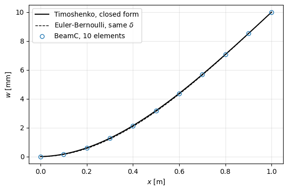

Tutorial: prescribed displacement at the tip of a cantilever#
A cantilever of 10 BeamC elements, clamped at \(x = 0\), whose free end is given the transverse deflection \(\delta\) with no applied load. The prescribed deflection is imposed by partitioning the degrees of freedom (dofs) into the free ones, bu, and the known ones, bk, with the prescribed values uk, see the user guide page Linear static analyses. The deflected shape and the reactions, at the tip where the deflection is prescribed and at the clamp, are compared with the
closed form of the Timoshenko beam.
The problem is solved in two ways: by the partition written by hand with SciPy, and with Analysis(..., bu=bu, uk=uk) in a single linear step.
Reference:
Bathe, K. J., Finite Element Procedures, 2nd ed., K. J. Bathe, Watertown, MA, 2014: Sec. 4.2.2, Eqs. (4.42), (4.43) and (4.45), the partition of the prescribed displacements; Sec. 1.2, Eq. (1.2), the tip deflection of a cantilever with shear deformation.
The model is built by the functions of tests/test_prescribed_displacement_linear.py, imported below, which runs the same comparisons as tests.
[1]:
%matplotlib inline
import os
import sys
sys.path.insert(0, os.path.join('..', 'tests'))
import numpy as np
import matplotlib.pyplot as plt
import sympy as sp
from scipy.sparse import csr_matrix
from pyfe3d import DOF
from pyfe3d.solver import solve, Analysis
from test_prescribed_displacement_linear import (cantilever_prop, cantilever,
boundary_conditions, timoshenko_cantilever, tip_force, internal_forces)
Model#
Rectangular aluminium cross section, width \(b = 0.1\) m along \(y\), height \(h = 0.2\) m along \(z\), length \(L = 1\) m (\(L/h = 5\)), \(E = 70\) GPa, \(\nu = 0.3\), prescribed tip deflection \(\delta = 10\) mm along \(Z\). BeamProp applies no shear correction factor, so the factor \(k = 5/6\) of the rectangle is put in the transverse shear modulus of the bending plane \(xz\), prop.G13 \(= k G\). BeamC uses it as \(k G A\) =
G13*A, in its shear stiffness and in the shear parameter \(\alpha_z = -12 E I_{yy}/(G_{13} A
L_e^2)\) of its shape functions, with \(L_e\) the element length. The bending stiffness of the deflection \(w\) is \(E I_{yy}\), with \(I_{yy} = b h^3/12\).
[2]:
prop, L, delta = cantilever_prop()
print('A = %g m2, Iyy = %g m4, E = %g Pa, G13 = k G = %g Pa'
% (prop.A, prop.Iyy, prop.E, prop.G13))
nodes, ncoords, elements, KC0 = cantilever(prop, L, num_elements=10)
N = KC0.shape[0]
bk, bu, uk, tip_w = boundary_conditions(N, delta)
f = np.zeros(N) # no applied load
print('N = %d dofs, %d free, %d known; uk[tip_w] = %g m'
% (N, bu.sum(), bk.sum(), uk[tip_w]))
A = 0.02 m2, Iyy = 6.66667e-05 m4, E = 7e+10 Pa, G13 = k G = 2.24359e+10 Pa
N = 66 dofs, 59 free, 7 known; uk[tip_w] = 0.01 m
Closed form#
For a Timoshenko cantilever loaded by a tip force \(P\), the bending moment is \(M(x) = P (L - x)\) and the shear force \(Q = P\). With the rotation of the cross section \(\theta\), \(E I \theta_{,x} = M\), and the shear strain is \(\gamma = w_{,x} - \theta = P/(k G A)\). Integrating with the clamp conditions \(w(0) = \theta(0) = 0\):
At \(x = L\), \(w(L) = P \left(\frac{L^3}{3EI} + \frac{L}{kGA}\right)\), which is Eq. (1.2) of Bathe (2014). Prescribing \(w(L) = \delta\) gives the tip reaction
the Euler-Bernoulli value. The clamp reactions balance it: the force \(-P\) along \(Z\) and the moment \(M_Y = P L\), from the moment equilibrium about the clamp, \(M_Y \boldsymbol{e}_Y + (L, 0, 0) \times (0, 0, P) = \boldsymbol{0}\). In pyfe3d the rotation about \(Y\) is \(r_y = -\theta\), since the axial displacement of a point at the height \(z\) is \(u + z r_y\) (Conventions, sign conventions). The derivation is checked with SymPy, as in
test_closed_form_timoshenko_cantilever of the test file: the two constitutive equations and the clamp conditions are satisfied, and solving \(w(L) = \delta\) for \(P\) gives the tip reaction and its Euler-Bernoulli limit:
[3]:
x_, L_, P_, EI_, kGA_, d_ = sp.symbols('x L P EI kGA delta', positive=True)
w_ = P_/EI_*(L_*x_**2/2 - x_**3/6) + P_*x_/kGA_
theta_ = P_/EI_*(L_*x_ - x_**2/2)
print('EI theta_,x - P (L - x) =', sp.simplify(EI_*sp.diff(theta_, x_) - P_*(L_ - x_)))
print('kGA (w_,x - theta) - P =', sp.simplify(kGA_*(sp.diff(w_, x_) - theta_) - P_))
print('w(0), theta(0) =', w_.subs(x_, 0), theta_.subs(x_, 0))
P_sol = sp.solve(sp.Eq(w_.subs(x_, L_), d_), P_)[0]
print('P from w(L) = delta =', sp.simplify(P_sol))
print('limit for kGA -> infinity =', sp.limit(P_sol, kGA_, sp.oo))
P, P_EB = tip_force(delta, prop, L)
print('Timoshenko P = %.6e N' % P)
print('Euler-Bernoulli P_EB = %.6e N, %.2f %% larger'
% (P_EB, 100*(P_EB/P - 1)))
print('shear/bending flexibility 3EI/(L^2 kGA) = %.4f'
% (3*prop.E*prop.Iyy/(L**2*prop.G13*prop.A)))
EI theta_,x - P (L - x) = 0
kGA (w_,x - theta) - P = 0
w(0), theta(0) = 0 0
P from w(L) = delta = 3*EI*delta*kGA/(L*(3*EI + L**2*kGA))
limit for kGA -> infinity = 3*EI*delta/L**3
Timoshenko P = 1.357642e+05 N
Euler-Bernoulli P_EB = 1.400000e+05 N, 3.12 % larger
shear/bending flexibility 3EI/(L^2 kGA) = 0.0312
The shear flexibility of this beam is 3.1 % of its bending flexibility, \(3 E I/(L^2 k G A) = \frac{E}{4 k G}(h/L)^2\) for the rectangle: the Euler-Bernoulli tip force is 3.1 % larger than the Timoshenko one, a difference that is visible below but small.
1. Partition by hand with SciPy#
The dofs need not be reordered: the Boolean arrays select the blocks. The free dofs solve
and the reactions follow from the second row of the partition, \(\boldsymbol{K}_{{C0}_{ku}} \boldsymbol{u}_u + \boldsymbol{K}_{{C0}_{kk}} \boldsymbol{u}_k - \boldsymbol{f}_k\), equal to the internal forces of update_fint at the known dofs minus the loads applied there, \(\boldsymbol{F}_{{int}_k} - \boldsymbol{f}_k\). These are Eqs. (4.43) and (4.45) of Bathe (2014), with the known set written \(k\), as in pyfe3d.
[4]:
KC0uu = KC0[bu, :][:, bu]
KC0uk = KC0[bu, :][:, bk]
KC0ku = KC0[bk, :][:, bu]
KC0kk = KC0[bk, :][:, bk]
u = np.zeros(N)
u[bk] = uk[bk]
u[bu] = solve(KC0uu, f[bu] - KC0uk @ uk[bk])
R_partition = KC0ku @ u[bu] + KC0kk @ uk[bk] - f[bk]
R = internal_forces(elements, prop, u, ncoords) - f
print('reactions from the partition against F_int - f at the known dofs: '
'largest difference %.1e of P' % (abs(R[bk] - R_partition).max()/P))
def print_reactions(R):
print('%-24s %18s %18s %10s' % ('reaction', 'FE', 'closed form', 'rel. diff.'))
for name, i, ref in [('tip force Z [N]', tip_w, P),
('clamp force Z [N]', 2, -P),
('clamp moment M_Y [N m]', 4, P*L)]:
print('%-24s %18.10e %18.10e %10.1e' % (name, R[i], ref, abs(R[i]/ref - 1)))
others = np.ones(N, dtype=bool)
others[[2, 4, tip_w]] = False
print('all other components, clamp and free dofs: largest |R| = %.1e of P'
% (abs(R[others]).max()/P))
print_reactions(R)
reactions from the partition against F_int - f at the known dofs: largest difference 1.0e-14 of P
reaction FE closed form rel. diff.
tip force Z [N] 1.3576415826e+05 1.3576415826e+05 1.4e-14
clamp force Z [N] -1.3576415826e+05 -1.3576415826e+05 3.0e-14
clamp moment M_Y [N m] 1.3576415826e+05 1.3576415826e+05 8.5e-15
all other components, clamp and free dofs: largest |R| = 9.3e-14 of P
The tip reaction \(P\), the clamp force \(-P\) along \(Z\) and the clamp moment \(M_Y = P L\) agree with the closed form, and all the other reactions and the forces at the free dofs vanish, to round-off: BeamC solves the homogeneous equations of the Timoshenko beam exactly.
The deflected shape: the nodal deflections and rotations against the closed form, and \(w(x)\) plotted with the Euler-Bernoulli shape of the same tip deflection, \(w_{EB}(x) = \delta \left(\frac{3 x^2}{2 L^2} - \frac{x^3}{2 L^3}\right)\).
[5]:
w_ref, theta_ref = timoshenko_cantilever(nodes, P, prop, L)
w_fe = u[2::DOF]
ry_fe = u[4::DOF]
print('max |w_FE - w| / delta = %.1e' % (abs(w_fe - w_ref).max()/delta))
print('max |r_y,FE + theta| / theta(L) = %.1e'
% (abs(ry_fe + theta_ref).max()/theta_ref[-1]))
xs = np.linspace(0, L, 201)
w_cf, _ = timoshenko_cantilever(xs, P, prop, L)
w_eb = delta*(3*xs**2/(2*L**2) - xs**3/(2*L**3))
fig, ax = plt.subplots(figsize=(6, 4))
ax.plot(xs, 1e3*w_cf, 'k-', label='Timoshenko, closed form')
ax.plot(xs, 1e3*w_eb, 'k--', lw=1, label='Euler-Bernoulli, same $\\delta$')
ax.plot(nodes, 1e3*w_fe, 'o', mfc='none', label='BeamC, 10 elements')
ax.set_xlabel('$x$ [m]')
ax.set_ylabel('$w$ [mm]')
ax.grid(True, alpha=0.3)
ax.legend()
plt.tight_layout()
plt.show()
i = np.argmax(abs(w_cf - w_eb))
print('largest difference Timoshenko - Euler-Bernoulli: %.3f mm at x = %.2f m'
% (1e3*(w_cf - w_eb)[i], xs[i]))
max |w_FE - w| / delta = 2.4e-15
max |r_y,FE + theta| / theta(L) = 8.3e-15

largest difference Timoshenko - Euler-Bernoulli: 0.058 mm at x = 0.42 m
2. Analysis with bu and uk#
Analysis receives the callables of the full model and the partition: the known dofs are those of ~bu, with the prescribed values uk[~bu], imposed exactly. The linear analysis, static(NLgeom=False), solves the same system \(\boldsymbol{K}_{{C0}_{uu}} \boldsymbol{u}_u = \boldsymbol{f}_u - \boldsymbol{K}_{{C0}_{uk}} \boldsymbol{u}_k\) in a single step and returns cs[0] of size N, with the prescribed values at the known dofs. calc_fext returns zeros: the analysis is
displacement controlled. The reactions are calc_fint(u) - calc_fext() at the known dofs.
[6]:
def calc_fext(inc=1., silent=True):
return np.zeros(N)
def calc_kC(c=None, NLgeom=False, silent=True):
return KC0
def calc_fint(c, silent=True):
return internal_forces(elements, prop, c, ncoords)
def calc_kG(c=None, NLgeom=False, silent=True):
return csr_matrix((N, N)) # not used by the linear analysis
an = Analysis(calc_fext, calc_fint, calc_kC, calc_kG, bu=bu, uk=uk)
increments, cs = an.static(NLgeom=False, silent=True)
u_an = cs[0]
print('increments', increments, ', u[tip_w] =', u_an[tip_w])
print('max |u_Analysis - u_partition| / delta = %.1e'
% (abs(u_an - u).max()/delta))
R_an = calc_fint(u_an) - calc_fext()
print_reactions(R_an)
increments [1.0] , u[tip_w] = 0.01
max |u_Analysis - u_partition| / delta = 1.0e-14
reaction FE closed form rel. diff.
tip force Z [N] 1.3576415826e+05 1.3576415826e+05 6.9e-15
clamp force Z [N] -1.3576415826e+05 -1.3576415826e+05 2.5e-14
clamp moment M_Y [N m] 1.3576415826e+05 1.3576415826e+05 5.6e-15
all other components, clamp and free dofs: largest |R| = 6.9e-14 of P
Both ways give the closed form to round-off. The same bu and uk serve the geometrically non-linear analyses, static(NLgeom=True), where the prescribed displacements grow with the load factor, \(\lambda \boldsymbol{u}_k\), see Non-linear static analyses.